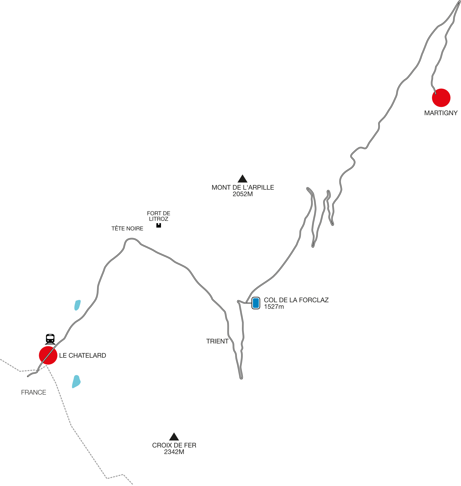

Swiss
SwissCol de la Forclaz
Valais - Swiss/French border
One of the more varied Alpine passes, the Col de la Forclaz runs from Martigny to the Swiss/French border at Châtelard. The pass can thank Thomas Cook and his development of the first tours from England for its construction.
Before the Col road was built, only mule traders and smugglers zigzagged up the mountain face over to what was later to become Valais and, even later, Switzerland. When Thomas Cook led his first tourists from England to Geneva and on to Chamonix, it was via the Forclaz that they entered the new federal state of Switzerland.
The first attempt at building a road started around 1827, but it wasn’t until 1920 that vehicles could use it. In those days it was closed at night, and during the day the speed limit was 18kph – now easily tripled on a cycling descent. Today the route is one of the few passes that are open all year round. On the odd occasion in winter when the road is closed, it’s generally because the Col des Montets on the French side is snowed in. This closure dictates a considerable detour via Geneva and the whole of Lake Geneva.

Back in 1999, the Forclaz was our first mountain pass experience, travelling to Saas-Fee for the Glacier bike race. We stopped on the descent for a picnic lunch while marvelling at the view of the Rhône valley from the Col’s slopes. In later years it became the main route from our home in Chamonix to the forbidden pleasures of Switzerland. Well, not forbidden, just expensive. We were often in an underpowered car fully loaded with bikes on the way to some now outlawed Swiss single-track. The climb back up the Forclaz was a fight against gravity, through the vineyards then deep into the mountains via luxuriously smooth turns and the odd hairpin bend, ascending all the while.
The hairpins in the middle part of the climb offer outstanding views back into the canton of Valais, with parking in a couple of choice spots. The blue haze over the Rhône valley is a common sight. In season the apricot sellers are out in force in the parking places.
The top of the climb is reached by a long straight. At the summit, there is a cafe with the obligatory ‘Swiss’ knick-knacks (made in China) and some parking. The area is a very popular hiking spot, with trails crisscrossing the area. These trails are part of the Ultra-Trail du Mont-Blanc route as well as the Tour du Mont Blanc. This isn’t the best summit of the day, though. The descent takes us through Trient, a place for hiking to the Trient glacier or for admiring the mountains that back on to Chamonix’s Balme ski area and the Mont Blanc range beyond that. And a pink church. After Trient the road becomes a fast descent, passing Tête-Noire and its ‘mysterious gorges’ through which Cook’s tourists had to climb.
During the Second World War, the pass from Forclaz to Châtelard was heavily fortified with 15 bunkers, and both road and railway were also protected by mines. The surrounding area was littered with anti-tank barriers, known as the Toblerone line after the redoubtable Swiss chocolate (although it’s unclear which was modelled on which), to prevent the Germans from invading through France. Some of the defences remained in place during the Cold War, and the last were eventually decommissioned in 1989.
The Col de la Forclaz can be enjoyed in either direction and makes for an international tour of three countries when added to the Great Saint-Bernard pass and the Col des Montets in France.
| Location |
|---|
| 46°03’32.4”N, 7°00’07.9”E |
| Châtelard > Forclaz > Martigny | |
|---|---|
| Distance (km) | 22 |
| Altitude (m) | 1527 |
| Start Altitude (m) | 1125 |
| End Altitude (m) | 503 |
| Minimum Altitude (m) | 503 |
| Maximum Altitude (m) | 1527 |
| Ascent (m) | 1088 |
| Descent (m) | 479 |